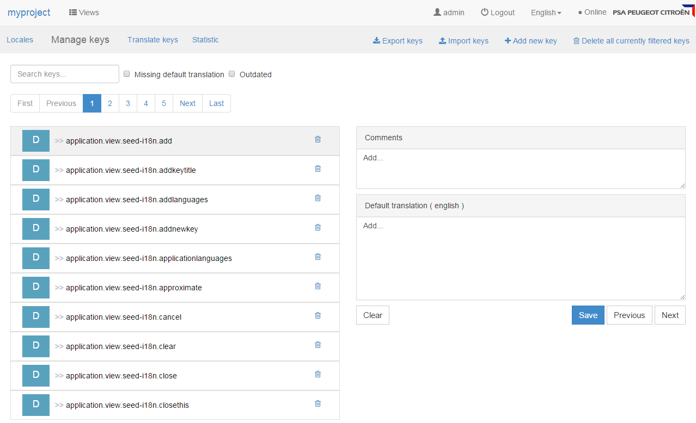

The i18n addon provides backend services and a Web UI to manage your application’s locales and translations.

Integration
To add the i18n addon to your project, start by adding the following dependency. Then configure the persistence and the security.
<dependency>
<groupId>org.seedstack.addons.i18n</groupId>
<artifactId>i18n-web</artifactId>
</dependency>dependencies {
compile("org.seedstack.addons.i18n:i18n-web:2.2.2")
}Persistence
The i18n addon uses JPA to store its data. No persistence.xml file is provided, as it expects your
application to be configured with automatically generated persistence information.
You just need add the JPA unit (seed-i18n-domain) to the global list of JPA units and specify its datasource:
[org.seedstack]
jpa.units = seed-i18n-domain, ...
[org.seedstack.jpa.unit.seed-i18n-domain]
datasource = my-datasource
Security
All the REST APIs are secured with permissions. These permissions are bound to two default roles:
seed-i18n.readerfor read accessseed-i18n.translatorfor read/write/delete access
Bind the i18n roles to yours, for instance:
[org.seedstack.seed.security.users]
john = password, MYPROJECT.DEVELOPER
admin = password, MYPROJECT.TRANSLATOR
[org.seedstack.seed.security.roles]
# Read access
seed-i18n.reader = MYPROJECT.DEVELOPER
# Read/Write/Delete access
seed-i18n.translator = MYPROJECT.TRANSLATOR
It is possible to create more fine grained security roles using the provided permissions. Here is the list of available permissions:
seed:i18n:locale:read
seed:i18n:locale:write
seed:i18n:locale:delete
seed:i18n:key:read
seed:i18n:key:write
seed:i18n:key:delete
seed:i18n:translation:read
seed:i18n:translation:write
seed:i18n:translation:delete
Cache (Optional)
The addon uses cache to improve i18n performances. By default, this cache does not need configuration, but it is possible to change the configuration as follow:
# Default configuration used by the i18n addon
[org.seedstack.seed.i18n.cache]
max-size=8192
concurrency=32
initial-size=2048
Backup/Restore
CSV
The «Manage Keys» interface provides CSV import/export functionality.
The exported CSV file is in UTF-8 in order to support all the possible languages. This encoding is not used by default in Microsoft Excel.
All data
In order to backup/restore all data with their metadata (e.g. default locale or outdated indicator) the addon provides
shell commands. To use it, enable the Shell support. Then, use the core:export or core:import
commands (cf. Core data documentation.
Java API usage
Locales
The i18n addon stores application available locales and default locale. Available locales are the locales in which the application is translated, i.e. available to users. The default locale is the «native language» of the application. This locale will be used as starting locale for translations.
Locales can be managed with i18n administration interface or programatically with the LocaleService.
@Inject
private LocaleService localeService;
Localization
Localization is provided by the LocalizationService which allows to localize date, number, string and currency.
@Inject
private LocalizationService localizationService;
The LocalizationService allows to translate i18n keys in different locales using the localize(String, String) method.
This method will fallback on the parent locale if the required locale is not present.
// Case 1: fr-BE translation is present
localizationService.localize("fr-BE", "key1"); // -> "translation fr-BE"
// Case 2: fr-BE translation is NOT present, but fr translation is present
localizationService.localize("fr-BE", "key1"); // -> "translation fr"
// Case 2: no translation present
localizationService.localize("fr-BE", "key1"); // -> "[key]"